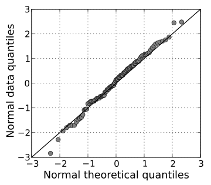

Statistical Tests¶
Test for Normality¶

src:wikipedia/Q–Q_plot
QQ plot of random normal data against a normal distribution
To get an indication on the shape of a distribution, or to compare to a given distribution, we can plot a histogram or a QQ-plot (quantile-quantile). When plotting a QQ-plot against a normal distribution, if all the samples fall close to the reference line, we can assume normality.
<ADD STATISTICAL TESTS FOR NORMALITY FROM ONENOTE>